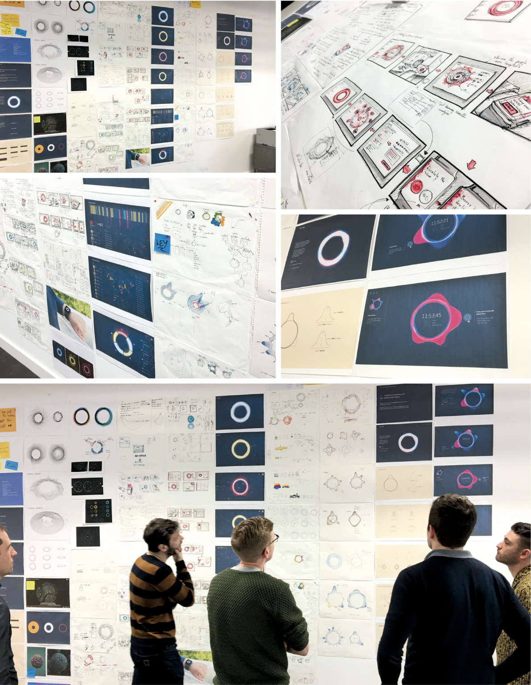

- VisionProject type
- 2017Year
- IT SecurityDomain
- Founding DesignerMy role
Challenge
Enterprise security teams were stuck in reactive mode — alerts fired after threats had already taken hold, and the tools to investigate them were fragmented and opaque. The challenge was to design a future-state vision for a platform that could surface threats proactively and give teams the context to respond intelligently.
Process
As founding designer, I defined the product vision from a blank canvas — researching threat intelligence workflows, mapping the mental models of security analysts under pressure, and translating complex network topology data into a visual language that made attack patterns immediately readable.
Outcome
A compelling security vision that established EVR's product direction — an intelligence layer that surfaces threats before they escalate, visualises attack graphs in real time, and gives teams the context to respond with confidence rather than scrambling through raw logs.
Concept & sketches
The design process began with extensive sketching — exploring how to visualise network topology, threat propagation, and attack causality in ways that analysts could read under pressure. The radial threat graph emerged from dozens of iterations as the core interaction model, placing the affected entity at the centre and mapping its blast radius outward.

The security vision
The final EVR experience — best seen in the full case study — demonstrates a proactive threat intelligence platform: live network graph with real-time threat propagation, alert triage with causality chains, and a remediation workflow that guides analysts from detection through to resolution. View the PDF for the complete walkthrough.